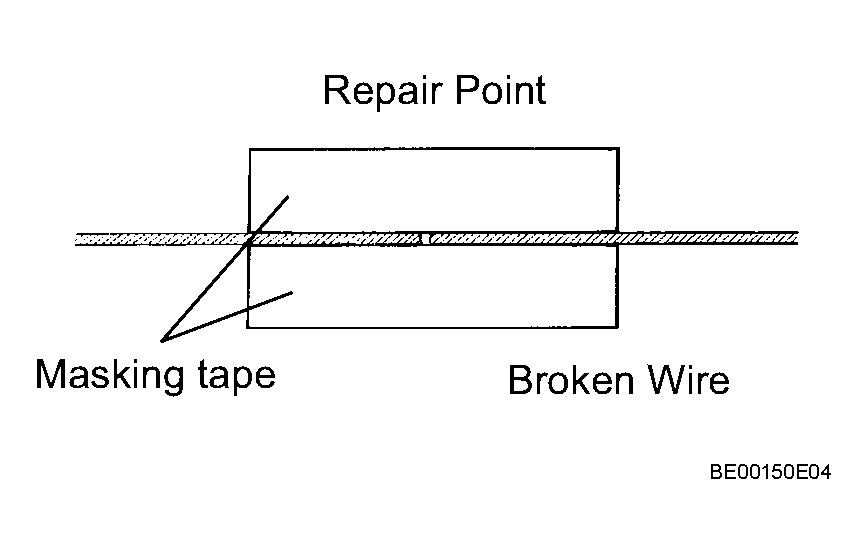
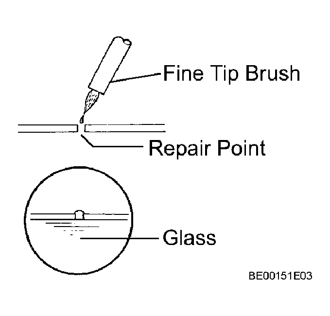

Window Glass Antenna Wire: Repair
- REPAIR WINDOW GLASS ANTENNA WIRE
- Clean the broken wire tips with grease, wax and silicone remover.
- Place masking tape along both sides of the wire to be repaired.
- Thoroughly mix the repair agent (DuPont paste No. 4817).

Courtesy of © TOYOTA, LICENSE AGREEMENT TMS1002
- Using a fine tip brush, apply a small amount to the wire.
- After a few minutes, remove the masking tape.
- Do not repair the defogger wire for at least 24 hours.

Courtesy of © TOYOTA, LICENSE AGREEMENT TMS1002